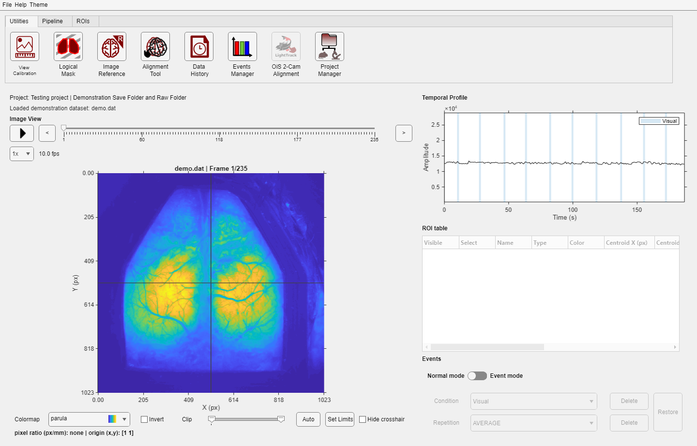

DataViewer opens image time series. It combines image navigation, temporal signals, ROIs, event-aligned viewing, processing, and project-aware tools in one window.

DataViewer;
DataViewer("C:\data\session\green.dat");
DataViewer("FilePath","C:\data\session\result.umt");| Source | Required information | Behavior |
|---|---|---|
| .dat | AcqInfos.mat in the Save Folder | Stores one continuous image channel. Every .dat file in the same Save Folder has the dimensions recorded in AcqInfos.mat. |
| Image-kind .umt | A compatible image entry | Stores processed or reduced results whose dimensions can differ from the original recording. The file carries the metadata needed to describe each entry. |
This two-file framework keeps large, equally sized continuous channels simple while allowing smaller processed results—such as amplitude maps or event averages—to describe their own dimensions and labels.
Save Folder (.dat/.umt + metadata)
|
v
DataViewer ----> ROI tools and temporal display
|
+----> Pipeline Manager / Events Manager
|
+----> project binding ----> references, alignment, project manager
|
+----> rig context --------> dual-camera coregistration
DataViewer is designed for basic exploration, so you do not need to save every display change. Frame position, colormap, clipping, crosshair position, and most previews last only for the current session. The app saves only metadata that must remain associated with the Save Folder, such as confirmed image calibration, coordinate origin, logical mask, Raw Folder location, and ignored event selections.
Processed images and newly created ROIs are not saved automatically. Use the relevant save or export command when you need to keep them. See Processing and export and Save Folder metadata files.